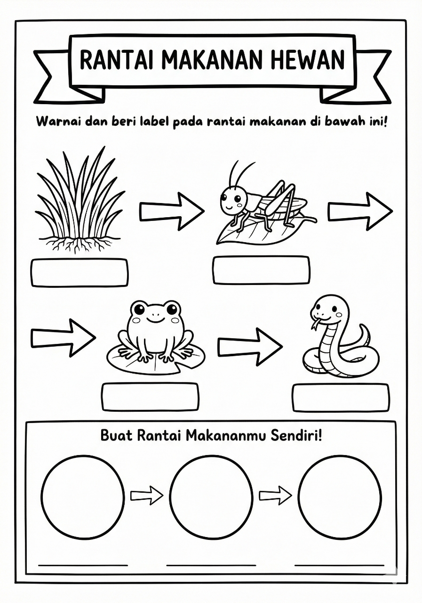

AI Tools Library
← Kembali ke DashboardEduPrompt Studio
Contoh visual pembelajaran beserta contoh perintah (prompt) yang siap digunakan di Gems.
Contoh Visual & Contoh Perintah

Siklus Hidup Makhluk Hidup
Buat infografis pembelajaran
tentang siklus hidup kupu-kupu
untuk siswa kelas 3 SD.
Gaya visual:
ilustrasi ramah anak,
warna cerah, gaya pixar.

Rantai Makanan Hewan
Buat worksheet visual
tentang rantai makanan
di ekosistem hutan
untuk siswa kelas 4 SD.
Gaya visual:
ilustrasi edukatif,
warna natural.

Bangun Ruang 3D
Buat visual pembelajaran
tentang bangun ruang
(kubus, balok, tabung)
untuk kelas 5 SD.
Gaya visual:
3D sederhana,
warna lembut.

Bangun Datar
Buat infografis
tentang bangun datar
(persegi, segitiga, lingkaran)
untuk kelas 2 SD.
Gaya visual:
flat design,
warna cerah.

Pola Bilangan
Buat visual latihan
tentang pola bilangan sederhana
untuk siswa kelas 3 SD.
Gaya visual:
ikon sederhana,
kontras jelas.
Siap Membuat Visual Pembelajaran Lebih Terarah?
Gunakan EduPrompt Studio langsung dari platform resmi.
Buka EduPrompt Studio